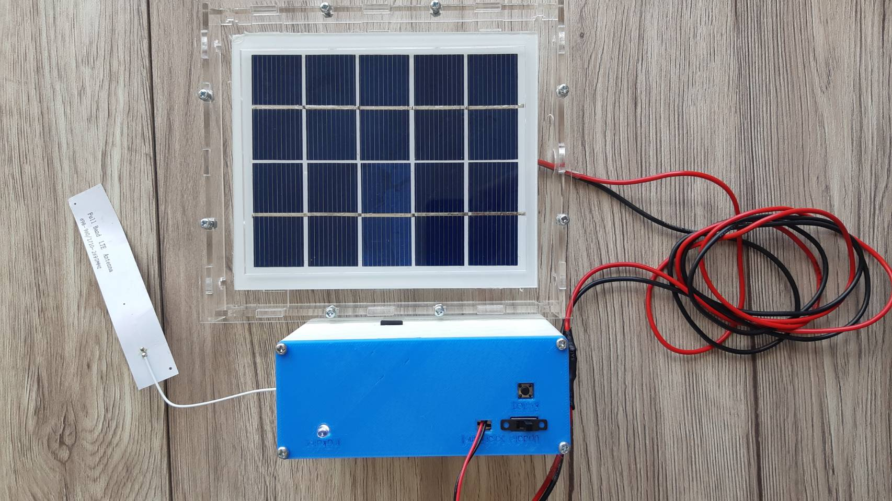
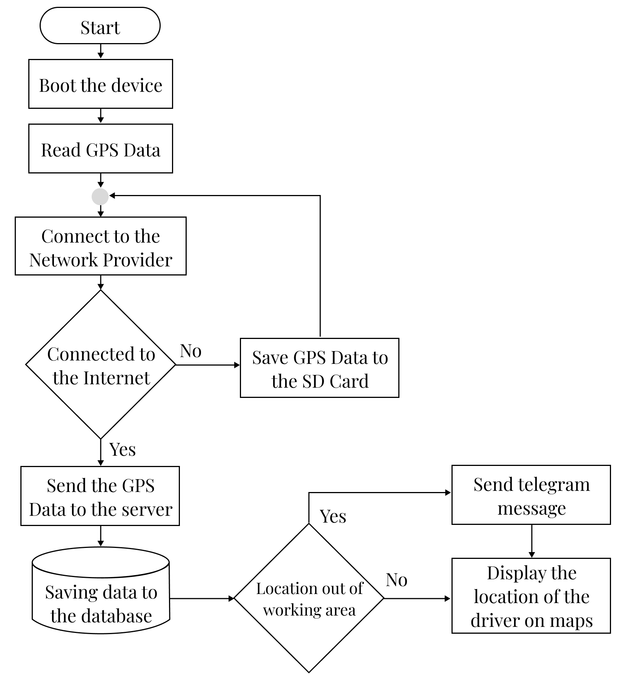
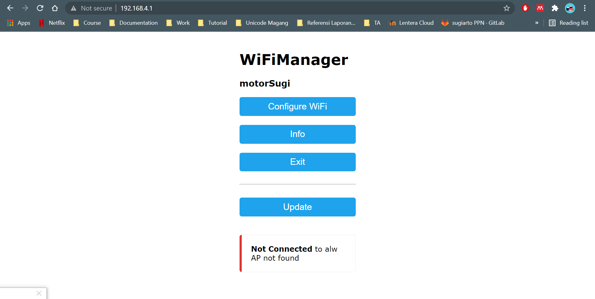
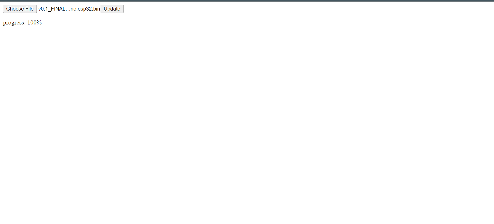
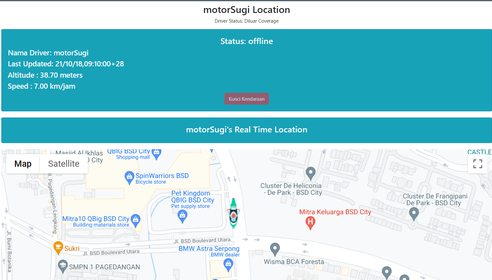
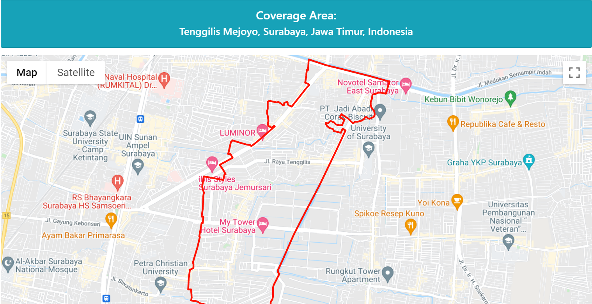
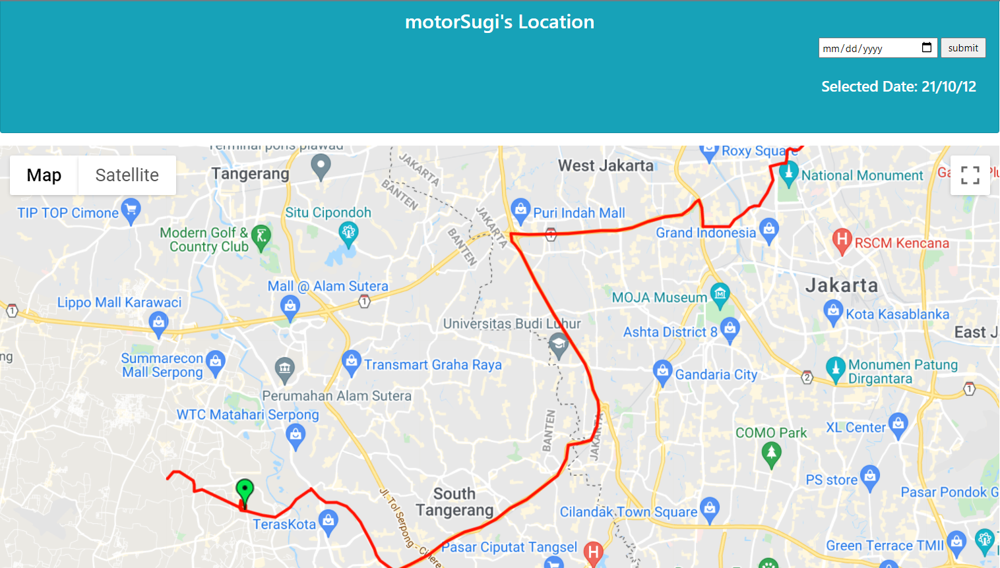
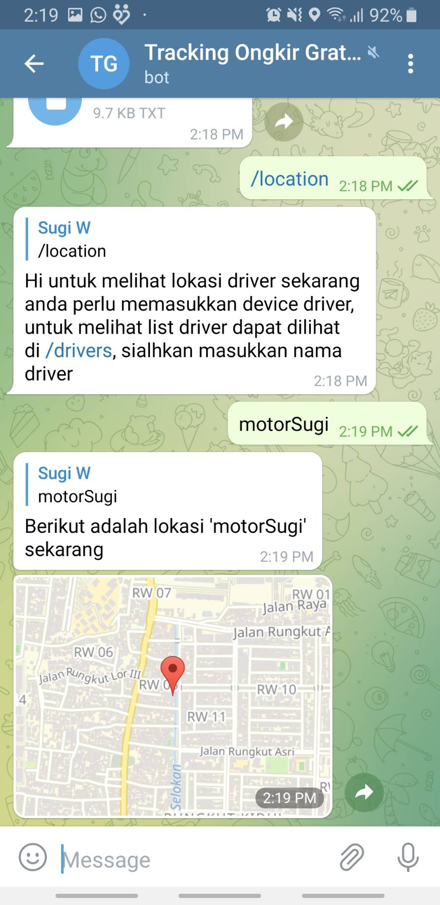
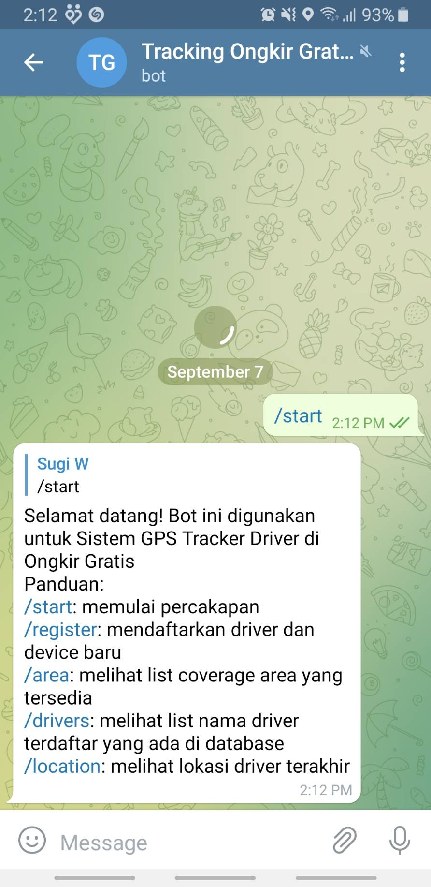
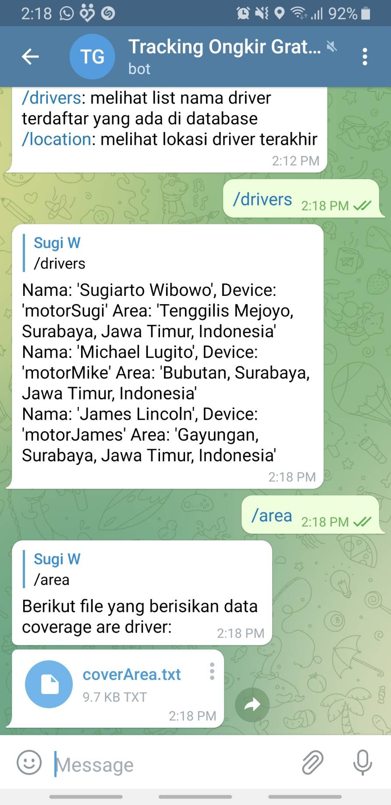

Embedded Programming · Internet of Things
IoT GPS Tracking System for Motorcycles

Abstract
A delivery company operating across multiple regions in Surabaya wanted to monitor whether drivers stayed within their assigned working area, and to be able to remotely lock a motorcycle in case of theft. Each motorcycle carries a microcontroller, cellular modem, and GPS module, with an owner-facing web dashboard for monitoring every driver.
Hardware
Two cellular modem options were evaluated: the SIM7000C and the SIM7600G-H R2, with the latter used for the final product. The SIM7000C didn't support the 4G LTE bands (2, 4, 5, 17) required by Smartfren's IoT Things Spark plan, so the SIM7600G-H R2 — which does support 4G LTE — was chosen instead.

The SIM7000C hardware is more complex — the modem is an external module connected to an ESP32 main processor over UART, with the ESP32 sending AT commands to control it. The ESP32 also drives buttons and a relay, powered by a LiPo battery charged via solar cell by day or the motorcycle's accumulator at night.

The SIM7600G-H R2 integrates directly onto the ESP32 board, again communicating over UART. This board adds an SD card slot, an 18650 battery socket, a solar cell port, and an RTC module with a relay.
Block Diagram

As a prototype, the server ran on a Raspberry Pi 4: Flask for the web server, MQTT for device communication, MySQL for storage, the Google Maps API for visualization, OpenStreetMap for working-area detection, and the Telegram API for notifications, driver registration, and bot-based monitoring.

On boot, the device reads GPS from the SIM7600G-H R2 and connects to the network. If offline, GPS data buffers to the SD card and syncs once reconnected. The server flags out-of-area readings and sends a Telegram notification; the driver's live location otherwise renders on the dashboard map.
The device also supports OTA firmware updates: it exposes a Wi-Fi access point, and connecting to it opens a web page for flashing new firmware.


Experiments
Field tests carried the device outside the assigned working area to confirm detection and Telegram notification, with the device periodically reporting GPS data to the dashboard.


Driver location history was also visualized:

The server notifies the owner via Telegram, which also responds to commands — tracking a driver, registering a new one, or listing all drivers.



Acknowledgements
This research was conducted with the help of:
- Mr. Indar Sugiarto — internship supervisor
- Mr. Christian and Mr. Agung, company supervisors at Unicode Indonesia
- And others who I couldn't mention individually